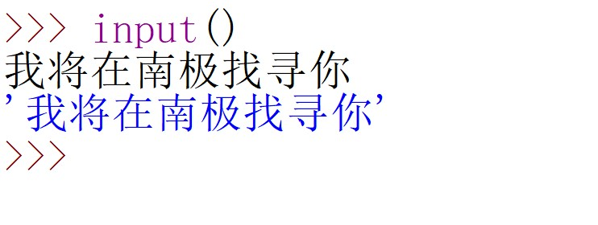
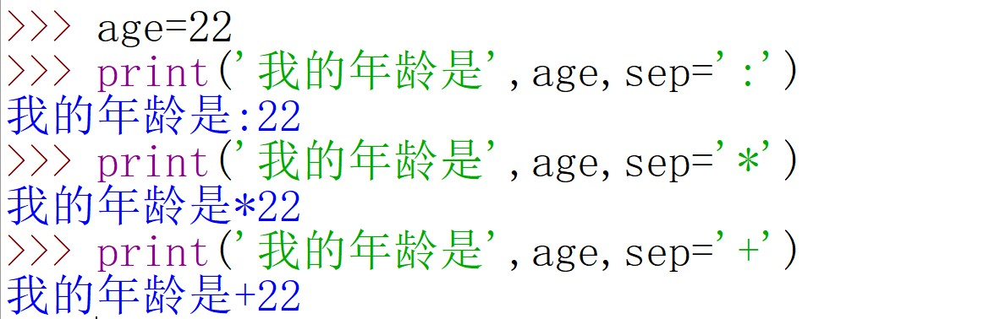

开篇
前面两期详细的介绍了字符串及其相关操作，在今后的编程中，你将经常和字符串打交道。一个比较常见的场景就是输入输出，所以本期将结合字符串，讲述最基本同时也是最常用的输入输出语法（input和print），并且会在文章最后补充一些之前没有讲到的字符串的内容。
input()用于接收用户的输入
input()用于接受用户的输入。
1 | input() |
当你写入以上代码，并按下回车键后，你会发现光标在闪动，这是在提示你要输入一些东西。
当输入完成后，再按一次回车，你所输入的东西便会打印出来显示在屏幕上，就像下面这样：

图中，黑色的字是我输入的，蓝色的字是打印输出在屏幕上的。
那如果不想打印输出在屏幕上，而是想将输入的内容保存起来，又应该怎么做呢？
简单！只要用一个变量接收input()的输入内容就搞定啦！

这样，输入的内容就被保存在变量x中了。

细心的你或许已经发现了，蓝色的字被一对''包裹着，这不正是之前学习的字符串类型吗？
没错！事实上，你输入input()中的任何类型的数据，都会变成字符串类型。
你可能不太信，因为上面的栗子中，我输入的内容我将在南极找寻你本身就是个字符串类型的，所以输出的自然也是字符串咯。为了证明我说的是对的，咱们可以试着输入一个数字，看看出来的是不是还是数字类型。
看吧，输入的数字2333也变成了字符串str类型。
以上就是input()的基本用法。
那你可能又会想：在提示输入时只有一个光标闪动会不会太不明显了？能不能加一些提示信息呢？
可以！input()中的()里面可以添加提示信息，看这个栗子：

蓝色的字是打印的提示信息，22是我的输入，它被保存在了变量age中。
学会使用print()
大家应该对print()不陌生了，之前的几期内容中也提到过它，今天就对它的常见用法做一个总结。
最基本的，就是将目标内容输出显示到屏幕上：

看起来有些单调，所以可以添加一些描述性的语句，这些语句是字符串类型，所以需要包裹到一对引号内，看下面的栗子：

这样看起来就清晰很多，不至于只有一个数字22而无任何其他信息。
但是对于稍稍有些强迫症的我来说，这还不够完美，因为在输出到屏幕上的内容中，'我的年龄是'和22之间有一个空格，我想要让他们之间无缝对接，那应该怎么做呢？
其实也不难。print()提供了一个seq的参数，可以使你自己设置被逗号分隔的两段内容（这里就是'我的年龄'和age）在输出时用什么符号连接，如果不设置，也就是什么都不写，那么默认就是用空格连接起来。
所以，我们只要将seq设置为空就可以了，就像下面这样：

当然，你也可以设置为:，*，+以及其他你能想到的字符。

现在考虑这么一个问题：
已知两个人的年龄，要求你将两个人的年龄输出到屏幕上(不限格式)。
可以创建一个脚本文件，内容如下：
1 | age1=22 |
你将在屏幕上看到以下输出结果：
这时候，题目增加了一个要求：两个print()语句输出的内容必须显示在同一行。
这应该如何实现呢？
其实，print()语句默认在运行结束后打印一个换行符，我们可以通过end参数来修改，比如end='*'表示在运行结束后打印一个*而不是换行符。
所以，问题解决了,在第一个print()语句中指明end为空格即可：
1 | age1=22 |
输出：
1 | 第一个人的年龄是 22 第二个人的年龄是 23 |
总结一下：
end用于指明在执行完print()*语句之后附带着打印的符号，若不指明，则使用默认的换行符
*
sep用于指名在同一个print()中，用逗号分隔的每个部分之间连接的符号，若不指明，则使用默认的空格
print()的格式化输出
方法1.类似C语言的方法
如果你没有学习过C或者早已忘记了C也不影响阅读，因为下面要讲的跟C本身并无直接关系。
在Python的print()中，可以使用以%开头的东西来占位置，所以形象的称之为占位符。主要有3种，分别是%d，%f，%s，分别对应了整数，浮点数(小数)和字符串。
看下面这个栗子：
1 | age1=22 |
注意，后面的%(age1,age2)中变量的顺序要与前面的占位符的顺序一一对应
再上个栗子，自己跟着敲一下，基本就掌握了。
1 | name='小明' |
方法2.使用format，用{}作为占位符（ps：我自己经常使用的是这个）
如果占位符{}内什么也不写，那么每一个{}就会按出现的顺序与format中的变量名一一对应，举个栗子就清楚啦：
1 | name='小明' |
如果占位符{}写了下标，那么format中变量名的位置下标必须与format中的下标从小到大一一对应，看这个栗子：
1 | name='小明' |
结合下图，或许你能更好的理解上面这个栗子

还有一种情况，就是{}传入的不仅可以是下标，还可以是变量的名字，此时format中传入的是变量名=内容，看栗子：
1 | name='小明' |
字符串的补充内容
在上面关于print()的学习中，我们遇到了换行符，以%开头的占位符等，这些东西又可以牵扯出字符串的几个知识点，下面来看一下。
1.转义字符
Python中使用\代表其后面的第一个字符是普通的字符串，而不是Python中具有某些功能的标识。比如，我想要输出I'm ok到屏幕上，直接写
1 | x='I'm ok' |
会报错，因为Python认为I被一对单引号包裹，单独成一部分，而后面的m ok'是另一部分。这样，由于后面那部分只有右侧的单引号而没有左侧的单引号，所以产生了语法错误。
这时候，转义字符\就派上用场了！
1 | x='I\'m ok' |
在\后面的'被认为是一个普通的字符，从而可以直接打印输出了。
还有一种特殊情况，就是在上面的格式化输出中，会用到%s，那万一字符串中正好有一部分叫做%s呢？百字不如一栗，上栗子：
在这个栗子中，有个人的名字叫做”王%s”
1 | age=18 |
看，这里的%也充当了转义字符的作用，它使得%s中的%不作为具有某些功能的符号，而只是一个普通字符。
2. 常用转义字符
(本图源自网络)
3.防止转义
看这个栗子：

由于字符串中包含转义字符\，所以会报错。
所以这里要考虑防止转义。
解决方法也很简单，那就是在转义字符\前面再加一个\，这样，\\代表的意思就是一个普通的反斜杠了：
其实，Python还提供了另一种更简单的方法，那就是在要防止转义字符生效的字符串前面加一个r，这个过程正好与上面的转义功能相反
看，在字符串前面加一个r就可以防止转义了，这和加两个\\的作用一模一样：